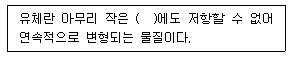
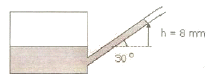
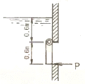
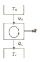

소방설비산업기사(기계) (2010-09-05 기출문제)
1과목: 소방원론
1. 건물화재에서의 사망원인 중 가장 큰 비중을 차지하는 것은?
- 연소가스에 의한 질식
- 화상
- 열충격
- 기계적 상해
(정답률: 86%)

2. 연소를 멈추게 하는 방법이 아닌 것은?
- 가연물을 제거한다.
- 대기압 이상으로 가압한다.
- 가연물을 냉각시킨다.
- 산소 농도를 낮춘다.
(정답률: 88%)
3. 피난대책의 일반적 원칙이 아닌 것은?
- 피난수단은 원시적인 방법으로 하는 것이 바람직하다.
- 피난대책은 비상시 본능 상태에서도 혼돈이 없도록 한다.
- 피난경로는 가능한 한 길어야 한다.
- 피난시설은 가급적 고정식 시설이 바람직하다.
(정답률: 77%)
4. 이황화탄소가 연소시 발생하는 유독성의 가스는?
- 황화수소
- 이산화질소
- 아세트산가스
- 아황산가스
(정답률: 70%)
5. 대체 소화약제의 물리적 특성을 나타내는 용어 중 지구 온난화 지수를 나타내는 약어는?
- ODP
- GWP
- LOAEL
- NOAEL
(정답률: 67%)
6. 금수성 물질이 아닌 것은?
- 칼륨
- 나트륨
- 알킬알루미늄
- 황린
(정답률: 76%)
7. 다음 중 점화원이 될 수 없는 것은?
- 전기불꽃
- 정전기
- 마찰열
- 기화열
(정답률: 83%)
8. 연소반응이 일어나는 필요한 조건에 대한 설명으로 가장 거리가 먼 것은?
- 산화되기 쉬운 물질
- 충분한 산소 공급
- 비휘발성인 액체
- 연소반응을 위한 충분한 온도
(정답률: 77%)
9. 화재시 흡입된 일산화탄소는 혈액 내의 어떠한 물질과 작용하여 사람이 사망에 이르게 할 수 하는가?
- 수분
- 백혈구
- 혈소판
- 헤모글로빈
(정답률: 80%)
10. 소화약제의 화학식에 대한 표기가 틀린 것은?
- C3F8 : FC-3-1-10
- N2 : IG-100
- CF3CHFCF3 : HFC-227ea
- Ar : IG-01
(정답률: 37%)
11. 제3류 위험물이며 금수성 물질에 해당하는 것은?
- 염소산염류
- 적린
- 탄화칼슘
- 유기과산화물
(정답률: 62%)
12. 화재의 분류에서 A급 화재에 속하는 것은?
- 유류
- 목재
- 전기
- 가스
(정답률: 85%)
13. 탄화칼슘이 물과 반응할 때 생성되는 가연성가스는?
- 메탄
- 아세틸렌
- 에탄
- 프로필렌
(정답률: 68%)
14. 물의 증발잠열은 약 몇 cal/g 인가?
- 79
- 539
- 750
- 810
(정답률: 87%)
15. 다음 중 할론 1301의 화학식은?
- CBr3Cl
- CBrCl3
- CF3Br
- CFBr3
(정답률: 74%)
16. 조리를 하던 중 식용유 화재가 발생하면 신선한 야채를 넣어 소화할 수 있다. 이 때의 소화방법에 해당 하는 것은?
- 희석소화
- 냉각소화
- 부촉매소화
- 질식소화
(정답률: 75%)
17. 다음 중 폭발의 위험성이 가장 낮은 분진은?
- 커피분
- 밀가루분
- 알루미늄분
- 시멘트분
(정답률: 82%)
18. 제1종 분말 소화약제의 주성분은?
- 탄산수소나트륨
- 탄산수소칼슘
- 요소
- 황산알루미늄
(정답률: 83%)
19. 화재시 발생하는 유도가스로 가장 거리가 먼 것은?
- 염화수소
- 이상화황
- 암모니아
- 인산암모늄
(정답률: 64%)
20. 제4류 위험물 중 제1석유류 ~ 제4석유류를 각 품명별로 구분하는 분류의 기준은?
- 발화점
- 인화점
- 비중
- 연소범위
(정답률: 74%)
2과목: 소방유체역학
21. 37.5℃인 원유가 30m3/min로 원관을 흐르고 있다. 층류로 흐를 수 있는 관의 최소 직경은 몇 m인가? (단, 37.5℃에서 원유의 동점성계수는 6×10-5m2/s 이고, 하임계 레이놀즈수는 2100이다.)
- 6.43
- 5.⑤
- 2.53
- 1.26
(정답률: 43%)
22. 직경 150mm의 실린더 내를 피스톤이 150mm 움직여서 질량 50g의 작동 유체를 흡입할 때 작동 유체의 비체적은 약 몇 m3/kg 인가?
- 0.039
- 0.045
- 0.048
- 0.⑤3
(정답률: 30%)
23. 단면적이 변하는 수평 원관 내부를 밀도가 1000kg/m3인 유체가 흐르고 있다. 안지름이 300mm인 곳과 100mm인 곳의 압력차가 14.7 kPa일 때 유량은 약 몇 m3/s인가? (단, 유량계수 Cv=0.7이고 손실은 무시한다.)
- 0.03
- 0.3
- 3
- 30
(정답률: 40%)
24. 노즐에서 10 m/s로서 수직방향으로 물을 분사할 때 최대 상승높이는 약 몇 m인가? (단, 저항 무시)
- 5.10
- 6.34
- 3.22
- 2.65
(정답률: 58%)
25. 다음과 같이 유체의 정의를 설명할 때 괄호 속에 가장 알맞은 용어는?

- 수직응력
- 전단응력
- 압력
- 중력
(정답률: 66%)
26. 용기에 기울기가 30도인 경사진 마노미터가 연결되어 있고 물기둥의 높이가 수직으로 8m 올라갔다면 용기내의 계기압은 약 몇 Pa 인가?

- 1.96
- 19.6
- 39.2
- 78.4
(정답률: 27%)
27. 노즐구경이 같은 소방차로 방수압력이 2배가 되도록 방수하면 방수량은 약 몇 배로 늘어나는가?
- 1.4배
- 2배
- 4배
- 8배
(정답률: 32%)
28. 안지름 25cm인 원관으로 1500m 떨어진 곳(수평거리)에 하루 10000m3의 물을 보내는 경우의 압력강하는 몇 kN/m2인가? (단, 마찰계수는 0.035 이다.)
- 58.4
- 584
- 84.8
- 848
(정답률: 49%)
29. 수문이 열리지 않도록 하기 위해 수문의 하단에 받쳐 주어야 할 최소 힘 P는 약 몇 N인가? 9단, 수문의 폭은 1m 이다.)

- 2600
- 3000
- 3500
- 5300
(정답률: 38%)
30. 고온 열원으로부터 열을 받아 그중 일부를 일로 바꾸고 나머지를 저온 열원으로 방출하는 다음의 비가역 열기관 사이클이 정상(steady) 상태로 운전되고 있다. 틀린 것은?

- 고온 열원의 엔트로피는 감소한다.
- 저온 열원의 엔트로피는 증가한다.
- 열기관의 엔트로피는 증가한다.
- 총엔트로피는 증가한다.
(정답률: 43%)
31. 물체의 온도가 100℃에서 200℃로 상승하였을 때 물체에서 방출하는 복사에너지는 약 몇 배가 되겠는가?
- 1.41
- 2
- 2.59
- 16
(정답률: 42%)
32. 레이놀즈수가 106이고 상대조도가 0.0008인 원관의 마찰계수 f는 0.019이다. 이 원관에 부차 손실계수가 6.46인 글로브 밸브를 설치하였을 때, 이 밸브의 등가길이(또는 상당길이)는 관의 지름의 몇 배인가?
- 6.46 배
- 34 배
- 340 배
- 8075 배
(정답률: 41%)
33. 축 동력이 80kW인 원심펌프의 회전수가 1750rpa 이라면 축 토크는 약 몇 J인가?
- 218
- 437
- 873
- 2740
(정답률: 32%)
34. 노즐에서 물의 유속이 20m/s로 벽에 수직으로 분사될 때 벽이 받는 힘은 약 몇 N 인가? (단, 노즐의 구경은 2cm 이다.)
- 981
- 102
- 1151.1
- 125.6
(정답률: 58%)
35. 흐르는 유체에 대한 연속 방정식이란 어떤 이론과 관련된 법칙인가?
- 질량보존의 법칙
- 에너지보존의 법칙
- 관성의 법칙
- 뉴턴의 운동 제2법칙
(정답률: 47%)
36. 온도 상승에 따른 액체의 점성계수의 변화를 바르게 설명한 것은?
- 분자 운동량의 증가로 점성계수는 증가한다.
- 분자 운동량의 감소로 점성계수는 감소한다.
- 분자간의 응집력이 약해지므로 점성계수가 증가한다.
- 분자간의 응집력이 약해지므로 점성계수가 감소한다.
(정답률: 44%)
37. 회전차의 직경이 42cm인 모형터빈의 양정이 5.64m, 회전수가 375rpm이다. 이것과 역학적 상사를 이루는 원형터빈의 회전차 직경이 409cm, 양정이 55m일 때, 원형 터빈의 회전수는 약 몇 rpm인가?
- 110
- 115
- 120
- 125
(정답률: 47%)
38. 압력 0.1MPa, 온도 60℃ 상태의 R-134a의 내부에너지는 약 몇 kJ/kg 인가? (단, 이때 h=454.99 kJ/kg, v=0.26791m3/kg이다.)
- 428.20
- 454.72
- 549.6
- 26336
(정답률: 22%)
39. 밀폐된 용기 속에 비중이 0.8인 기름이 들어 있고, 위 공간에 공기가 들어있다. 공기의 압력이 9800Pa 로서 기름 표면에 미치고 있다. 기름 표면부터 1m 깊이에 있는 점의 압력을 물의 수두(head)로 환산하면 몇 m인가?
- 0.8
- 1.8
- 100
- 800
(정답률: 43%)
40. 이상기체의 정압변화를 나타내는 것은? (단, P:압력, V:부피, T:온도, k:비열비)
- PVk=일정
- PV=일정
- P/T=일정
- V/T=일정
(정답률: 40%)
3과목: 소방관계법규
41. 지정수량의 몇 배 이상의 위험물을 취급하는 제조소에는 피뢰침을 설치하여야 하는가?
- 5배
- 10배
- 500배
- 1000배
(정답률: 77%)
42. 소방용수시설ㆍ소화기구 및 설비 등의 설치명령을 위반한자에 대한 과태료는?
- 100만원 이하
- 200만원 이하
- 300만원 이하
- 500만원 이하
(정답률: 47%)
43. 형식승인대상 소방용 기계ㆍ기구에 속하지 않는 것은?
- 가스누설경보기
- 관창
- 안전매트
- 완강기
(정답률: 42%)
44. 위험물 제조소에서 “위험물 제조소” 라는 표시를 한 표지의 바탕색은?
- 청색
- 적색
- 흑색
- 백색
(정답률: 54%)
45. 보일러 등의 위치ㆍ구조 및 관리와 화재예방을 위하여 불의 사용에 있어서 지켜야 하는 사항 중 난로의 연통은 건물 밖으로 몇 [m]이상 나오게 설치하여야 하는가?
- 0.5[m]
- 0.6[m]
- 1.0[m]
- 2.0[m]
(정답률: 47%)
46. 화재가 발생하는 경우 화재의 확대가 빠른 특수가연물에 속하는 것으로 잘못된 것은?
- 면화류 100킬로그램 이상
- 나무껍질 400킬로그램 이상
- 볏짚류 1000킬로그램 이상
- 가연성액체류 2세제곱미터 이상
(정답률: 56%)
47. 소방자동차가 화재진압 및 구조ㆍ구급활동을 위하여 출동하는 때 소방자동차의 출동을 방해한 자에 대한 벌칙은?(관련 규정 개정전 문제로 여기서는 기존 정답인 2번을 누르면 정답 처리됩니다. 자세한 내용은 해설을 참고하세요.)
- 10년 이하의 징역 또는 5천만원 이하의 벌금
- 5년 이하의 징역 또는 3천만원 이하의 벌금
- 3년 이하의 징역 또는 1천5백만원 이하의 벌금
- 1년 이하의 징역 또는 1천만원 이하의 벌금
(정답률: 62%)
48. 건축허가등의 동의대상물의 점위에 속하지 않는 것은?
- 관망탑
- 방송용 송ㆍ수신탑
- 항공기격납고
- 철탑
(정답률: 58%)
49. 위험물안전관리법상 제1류 위험물의 성질은?
- 산화성 액체
- 가연성 고체
- 금수성 물질
- 산화성 고체
(정답률: 75%)
50. 소방기본법에서 사용하는 용어의 정의로 옳지 않은 것은?
- 소방대상물이란 건축물, 차량, 선박(항구안에 매어둔 선박에 한함), 선박건조구조물, 산림 그 밖의 공작물 또는 물건을 말한다.
- 소방본부장이란 특별시ㆍ광역시ㆍ도 또는 특별자치도에서 화재의 예방ㆍ경계ㆍ진압ㆍ조사 및 구조ㆍ구급 등의 업무를 담당하는 부서의 장을 말한다.
- 소방대장이라 함은 소방본부장 또는 소방서장 등 화재, 재난ㆍ재해 그 밖의 위금한 상황이 발생한 현장에서 소방대를 지휘하는 자를 말한다.
- 소방대라 함은 화재를 진압하고 화재, 재난ㆍ재해 그 밖의 위급한 상황에서의 구조ㆍ구급활동을 등을 하기 위하여 소방공무원, 의무소방원, 자위소방대로 구성된 조직체를 말한다.
(정답률: 49%)
51. 특저오방대상물에 대한 소방시설의 자체ㅐ점검시 일반적인 종합정밀점검의 점검횟수로 옳은 것은?
- 연 1회 이상
- 연 2회 이상
- 반기별 2회 이상
- 분기별 2회 이상
(정답률: 70%)
52. 소방시설관리업자가 점검을 하지 아니하거나 점검결과를 실제와 다르게 보고한 때의 1차 행정처분기준은?(오류 신고가 접수된 문제입니다. 반드시 정답과 해설을 확인하시기 바랍니다.)
- 등록취소
- 영업정지 3월
- 경고(시정명령)
- 영업정지 6월
(정답률: 52%)
53. 위험물안전관리법령에 의하여 자체소방대에 배치하여야 하는 화학소방차의 구분에 속하지 않는 것은?
- 포수용액 방사차
- 고가 사다리차
- 제독차
- 할로겐화합물 방사차
(정답률: 61%)
54. 특정소방대상물 중 숙박시설에 해당하지 않는 것은?
- 오피스텔
- 모텔
- 한국전통호텔
- 가족호텔
(정답률: 66%)
55. 특정소방대상물 중 지하가(터널 제외)로서 연면적이 몇[m2]이상인 것은 스프링클러설비를 설치하여야 하는가?
- 100[m2]
- 200[m2]
- 1000[m2]
- 2000[m2]
(정답률: 69%)
56. 제조소등의 위치ㆍ구조 또는 설비의 변경 없이 당해 제조소등에서 저장하거나 취급하는 위험물의 지정수량의 배수를 변경하고자 할 때는 누구에세 신고하여야 하는가?
- 행정안전부장관
- 시ㆍ도지사
- 관할소방본부장
- 관할소방서장
(정답률: 57%)
57. 특정소방대상물 중 근린생활시설에 속하지 않는 것은?
- 찜질방
- 박물관
- 치과의원
- 산후조리원
(정답률: 50%)
58. 특정소방대상물의 발주자는 당해 도급계약의 수급인이 일정한 사유가 발생할 경우 대하여 도급계약을 해지할 수 있는 바, 그 사유에 해당 되지 않는 것은?
- 소방시설업을 휴업 또는 폐업한 때
- 소방시설업이 영업정지의 처분을 받은 때
- 소방시설업이 등록이 취소되었을 때
- 정당한 사유 없이 20일 이상 소방시설공사를 계속하지 아니하는 때
(정답률: 68%)
59. 방화관리지가 작성하는 소방계획의 내용에 포함되지 않는 것은?
- 소방시설공사 하자의 판단기준에 관한 사항
- 소방시설ㆍ피난시설 및 방화시설의 점검ㆍ정비계획
- 공동 및 분임방화관리에 관한 사항
- 소화 및 연소방지에 관한 사항
(정답률: 53%)
60. 피난구유도등 또는 통로유도등을 화재안전기준에 적합하게 설치한 경우에는 그 유도등의 유효범위안의 부분에서 설치가 면제되는 소방시설은?
- 휴대용비상조명등
- 비상조명등
- 피난유도표지
- 피난유도선
(정답률: 36%)
4과목: 소방기계시설의 구조 및 원리
61. 포소화설비에서 특수가연물을 저장ㆍ취급하는 공장 또는 창고에 설치할 수 없는 포소화설비는?
- 포헤드설비
- 고정포방출설비
- 포소화전설비
- 포워터스프링클러설비
(정답률: 29%)
62. 물분무소화설비를 설치하는 차고 또는 주차장에 설치하는 배수설비의 기준으로 틀린 것은?
- 차량이 주차하는 바닥은 배수구를 향하여 100분의 1 이상의 기울기를 유지할 것
- 차량이 주차하는 적당한 곳에 높이 10cm 이상의 경계턱으로 배수구를 설치할 것
- 배수설비는 가압송수장치의 최대송수능력의 수량을 유효하게 배수할 수 있는 크기로 할 것
- 배수구에서 새어나온 기름을 모아 소화할 수 있도록 길이 40m 이하마다 기름분리장치를 설치할 것
(정답률: 65%)
63. 호스릴분말소화설비에 있어서 하나의 노즐에 대한 소화약제의 종별에 따른 기준량으로 적합하지 않은 것은?
- 제1종 분말 : 50kg
- 제2종 분말 : 40kg
- 제3종 분말 : 30kg
- 제4종 분말 : 20kg
(정답률: 73%)
64. 포 소화약제의 혼합장치로서 펌프와 발포기의 중간에 벤추리관을 설치하여 벤추리작용에 따라 소화약제를 흡입ㆍ혼합하는 방식은?
- 펌프 푸로포셔너
- 프레져 푸로포셔너
- 라인 푸로포셔너
- 프레져사이드 푸로포셔너
(정답률: 58%)
65. 연결송수관설비의 배관을 습식으로 하여야 할 소방대상물은?
- 지상 8층인 병원 건물
- 지상 10층인 백화점 건물
- 지면으로부터의 높이가 30m인 호텔 건물
- 지면으로부터의 높이가 40m인 오피스 건물
(정답률: 57%)
66. 다음 중 피난기구의 화재안전기준에서 정의한 피난기구에 속하지 않는 것은?
- 구조대
- 피난사다리
- 공기안전매트
- 방열복 및 공기호흡기
(정답률: 62%)
67. 자동식소화기를 아파트의 각 세대별로 주방에 설치할 때 사용되는 가스차단장치는 주방배관의 개폐밸브로부터 몇 m 이하의 위치에 설치하여야 하는가?(관련규정 개정전 문제로 기존 정답은 3번이었으며 여기서는 3번을 누르면 정답 처리 됩니다. 자세한 내용은 해설을 참고하세요.)
- 1.0m
- 1.5m
- 2.0m
- 2.5m
(정답률: 71%)
68. 이산화탄소소화설비를 사람이 많이 출입하는 박물관에 설치하고자 한다. 수동식 기동장치를 설치할 때의 내용으로 잘못된 것은?
- 기동장치의 조작부는 보호판 등에 따른 보호장치를 설치하여야 한다.
- 기동장치의 조작부는 바닥으로부터 0.8m 이상 1.5m 이하의 위치에 설치한다.
- 전역방출방식에 있어서는 방호구역마다, 국소방출방식에 있어서는 방호대상물마다 설치한다.
- 기동장치의 복구스위치는 음향경보장치와 연동하여 조작될 수 있는 것이어야 한다.
(정답률: 45%)
69. 스프링클러설비의 배관 중 수직배수배관의 구경은 얼마 이상으로 하여야 하는가? (단, 수직배관의 구경이 50mm 미만일 경우에는 제외한다.)
- 40mm
- 45mm
- 50mm
- 60mm
(정답률: 41%)
70. 전동기에 따른 펌프를 이용하는 가압공수장치의 설치는 소방대상물의 어느 층에 있어서도 당해 층의 옥내소화전을 동시에 사용할 경우 각 소화전의 노즐선단에서의 방수압력의 최소기준은 몇 MPa 이상인가?
- 0.17 MPa 이상
- 0.2 MPa 이상
- 0.27 MPa 이상
- 0.7 MPa 이상
(정답률: 72%)
71. 제연설비의 배출기 및 배출풍도에 관한 설치기준으로 적당치 않은 것은?
- 배출기와 배출풍도의 접속부분에 사용하는 캔버스는 내열성이 있는 것으로 한다.
- 풍도단면의 긴변 또는 직경의 크기가 450mm 이하인 경우의 강판두께의 0.5mm 이다.
- 배출기의 전동기 부분과 배풍기 부분은 분리하여 설치하여야 하며, 배풍기 부분은 유효한 내열처리를 한다.
- 배출기의 흡입측 풍도안의 풍속은 20m/s 이하로 하고 배출측 풍속은 25m/s 이하로 한다.
(정답률: 62%)
72. 할로겐화합물소화설비의 화재안전기준에서 할론 1301 축압식 저장용기의 충전비로서 맞는 것은?
- 0.51 이상 0.67 미만
- 0.67 이상 2.75 이하
- 0.7 이상 1.4 이하
- 0.9이상 1.6 이하
(정답률: 50%)
73. 연결송수관설비의 배관 설치기준으로 맞는 것은?
- 주배관의 구경은 75mm 이상으로 한다.
- 지상 11층 이상인 소방대상물은 습식설비로 한다.
- 배관은 주배관의 구경이 75mm 이상인 옥내소화전 설비의 배관과 겸용할 수 있다.
- 연결송수관설비의 수직배관은 학교 또는 공장이거나 배관주위를 1시간 이상의 내화성능이 있는 재료로 보호하는 경우에는 설치하지 않아도 된다.
(정답률: 45%)
74. 소화기구의 화재안전기준에서 정하고 있는 설치기준에서 지하층이나 무창층 또는 밀폐된 거실 및 사무실로서 그 바닥면적이 20m2 미만의 장소에는 설치할 수 없는 소화기는?
- 분말소화기
- 강화액소화기
- 이산화탄소소화기
- 산, 알칼리소화기
(정답률: 63%)
75. 제연설비에서 배출풍도 단면의 직경이 300mm 인 경우에 배출풍도 강판두께 기준은?
- 0.5 mm 이상
- 0.8 mm 이상
- 1.0 mm 이상
- 1.3 mm 이상
(정답률: 62%)
76. 연결송수관설비의 송수구 설치에서 결합 금속구의 구경은 몇 mm 인가?
- 32mm
- 40mm
- 50mm
- 65mm
(정답률: 71%)
77. 소방대상물의 보와 가장 가까운 스프링클러헤드의 설치는 스프링클러헤드의 반사판중심과 보의 수평거리가 1.3m 일 때 스프링클러헤드의 반사판 높이와 보의 하단 높이의 수직거리의 기준은?
- 0.1m 미만
- 0.15m 미만
- 0.3m 미만
- 보의 하단보다 낮을 것
(정답률: 39%)
78. 다음 중 물분무소화설비의 송수구 설치 기준으로 옳지 않은 것은?
- 구경은 65mm 쌍구형으로 한다.
- 지면으로부터 높이가 0.8m 이상 1.5m 이하에 설치한다.
- 송수구의 가까운 부분에 자동배수밸브 및 체크밸브를 설치한다.
- 송수구는 하나의 층의 바닥면적이 3000m2를 넘을 때마다 1개(5개 이상은 5개) 이상을 설치한다.
(정답률: 39%)
79. 예상제연구역에 공기가 유입되는 순간의 풍속은 얼마 이하이어야 하는가?
- 2 m/s
- 3 m/s
- 4 m/s
- 5 m/s
(정답률: 62%)
80. 옥내소화전설비에서 정격토출량이 300ℓ/min인 펌프를 성능시험배관의 직관부에 설치하고자 할 때 유량계의 유량측정범위로 가장 적합한 것은?
- 200ℓ/min~300ℓ/min
- 200ℓ/min~400ℓ/min
- 200ℓ/min~500ℓ/min
- 200ℓ/min~600ℓ/min
(정답률: 52%)